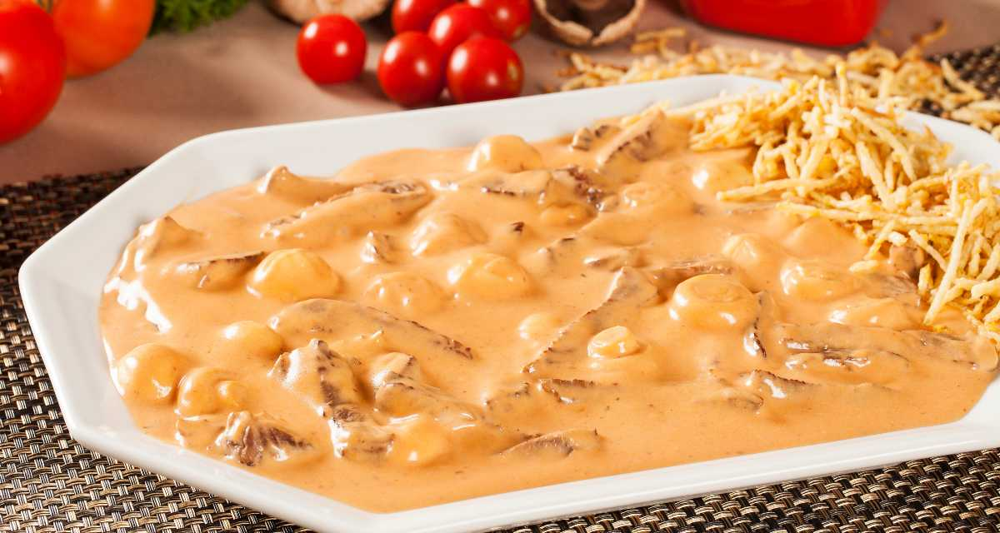

Strogonoff

Strogonoff The Russia in brasil (a lot better).
ingredients
- Olive oil
- High-quality beef cut into cubes or sliced into strips
- Diced onion
- Brazilian sofrito or Cloves of minced garlic
- Sliced white mushrooms
- Tomato paste
- Ketchup
- Worcestershire sauce
- Heavy cream
- Salt and pepper to taste
how to made
- Season your beef and let it sit on the counter for about 20 minutes.
- Remove the beef and set it aside on a plate and then add the onions to the hot pan. Saute the onions for 2-3 minutes and then add in the garlic and saute for another minute or two.
- Add in the sliced mushrooms.
- Cook the mushrooms for about 5 minutes until they have wilted down.
- Add the beef back in, then the tomato paste, Worcestershire sauce, and ketchup. Saute for about 2 minutes while stirring.
- Add water and let the pan simmer for a few minutes. Make sure to stir and scrape any bits of food off of the sides and the bottom of the pan.
- Add in the heavy cream and let the beef stroganoff simmer just a few minutes longer. Give it a final stir, and that's it.
Home page